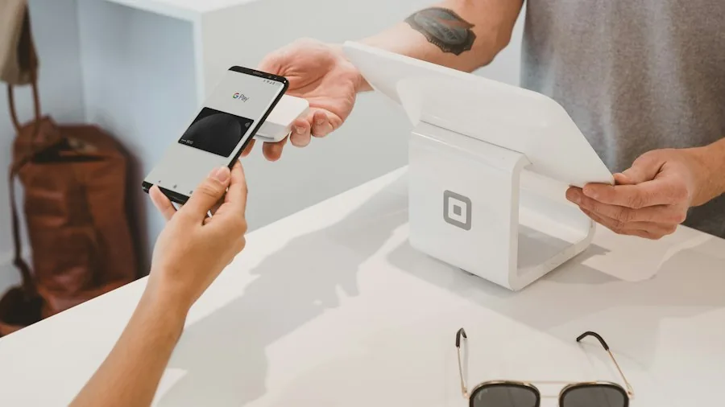

Articles · Monetization
Selling in Telegram: From Tip Jar to Full Shop (Without a Website)

Telegram is quietly one of the easiest places to sell without a website: payments, delivery and even storefronts live inside the app. Here’s the stack, from “take tips” to “run orders”, with the trust mechanics that make people actually pay.
Level 1: tips and donations
- CryptoBot — the established wallet bot: generate payment links/invoices in a few taps, keep balance in-app. The default tip jar for channels.
- Telegram Stars gifts — zero-setup; readers gifted your channel already have a way to say thanks.
- Pin a small “support” card with your CryptoBot link; repeat it quarterly, not weekly — begging frequency taxes goodwill.
Level 2: selling digital goods
- Paid media with Stars — mark a photo/video as paid; Telegram handles unlocking natively. Perfect for single-file products (presets, checklists, templates).
- Manual delivery with CryptoBot invoices — buyer pays the invoice, you send the file. Fine to start; automation comes later.
- Order bots — shop-builder bots (several established ones) give you a catalog, cart and payment in a bot you link from the channel. Best for >5 products or physical goods with variations.
Level 3: the shop pattern that converts
- Channel = audience and trust; bot = store; the link between them is pinned and repeated in relevant posts.
- Every product post: what it is, who it’s for, price in both currency and Stars, one proof (screenshot/result), payment link. No life stories.
- Deliver instantly where possible — file bots and paid media deliver in seconds, and instant delivery is the trust multiplier nobody talks about.
- Public “delivery confirmed” replies (with permission) compound faster than any discount.
Trust signals buyers check before paying you
- Consistent publishing history — a channel that posts on schedule for months (visible in the feed) reads as a real operation. This is the quiet reason scheduler-run channels outsell manual ones.
- Real engagement — comments, poll votes, view ratios. Buyers check TGStat’s numbers on bigger channels before trusting a shop.
- Refund policy stated in one line — even “no refunds after delivery” beats silence.
What not to do
- Don’t move sales into DMs without a bot or invoice trail — disputes become unwinnable.
- Don’t spam the channel with product posts; the 1-in-5 content-to-ad ratio applies to your own products too.
- Don’t promise Telegram-Star refunds you can’t process — understand the payout/refund flow before launch day.
The payment flow, click by click
Cart abandonment exists even in a chat app. The flow that converts best in Telegram channels, refined by shops that run entirely in-channel:
- The post shows the product, the price, and ONE button. A single inline button — "Buy" or "Order" — opening the bot. Every additional button measurably splits the clicks.
- The bot takes over within one tap. Product recap, quantity, payment method choice (CryptoBot invoice, Stars, external link). Three screens maximum to payment.
- Confirmation comes back to the channel's discussion group — anonymized. "Order #124 shipped" posts aren't just social proof; they double as a public ledger that the shop actually delivers.
- The follow-up lives in the bot. Delivery updates, support, repeat purchase offers — all in the same chat the purchase happened in. Re-opening a conversation beats cold-acquiring a new one by an order of magnitude.
The trust signals buyers check before the first order: how old the channel is, whether past buyers commented, a pinned "how refunds work" post. Write that pinned post before you sell anything.
Common questions
Can I sell products directly inside Telegram?
Yes — paid media via Stars, CryptoBot invoices, and shop-builder bots all work without a website. The channel drives demand; a bot or native paid content handles payment and delivery.
What is CryptoBot used for?
It’s Telegram’s established wallet bot: balance, transfers, payment links and invoices. Channel owners use it for tips, product payments and paying contractors without leaving Telegram.
Do I need a bot to take payments?
For Stars paid content, no — Telegram handles it natively. For everything else (crypto invoices, order forms, catalogs), a bot is the standard mechanism.
How do buyers trust a Telegram shop?
Publishing consistency, visible engagement, public delivery confirmations and a stated refund line. A scheduled, active channel is itself the strongest trust signal.